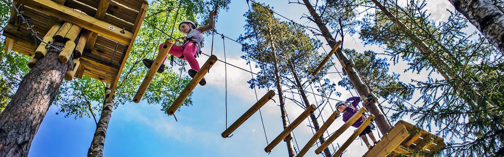
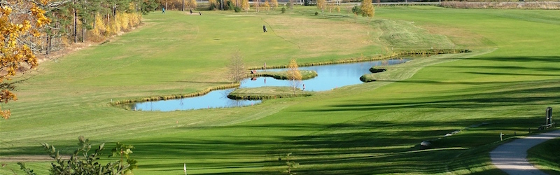

Fredriksten festning og områdene rundt er en fantastisk ramme for en rekke ulike opplevelsestilbud for bedrifter, foreninger, lag eller en gruppe venner.

Fredriksten Hotell tilbyr aktiviteter hos Klatring på Grensen. Kombiner et møte hos oss med utfordrende og spennende aktiviteter.
Klatring i tretopps klatrebaner gir en flott opplevelse og mestringsfølelse. Banene har ulik vanskelighetsgrad. Klatring på Grensen tilbyr klatring på ulike nivåer. Det finnes over 90 plattformer, 3 ulike Tarzan-hopp, 9 zip- lines, Låvesuget og basehopp fra Låvehoppet.
Her vil alle kunne finne utfordringer.

Halden Golfklubb ligger mindre enn ett stenkast fra Fredriksten Festning, og kun fem minutters spasertur fra Fredriksten Hotell. Her finner du en variert 18-hullsbane blant festningsmurer. Banen både fremhever og forskjønner festningsområdet. De eldste 9 hull må betegnes som åpen parkbane, og de nye 9 hull er en mer krevende skog- og parkbane.
Fredriksten Hotell samarbeider med Halden Golfklubb. Ta kontakt med oss for tilbud.